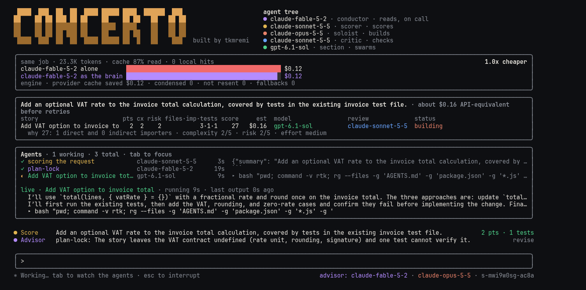
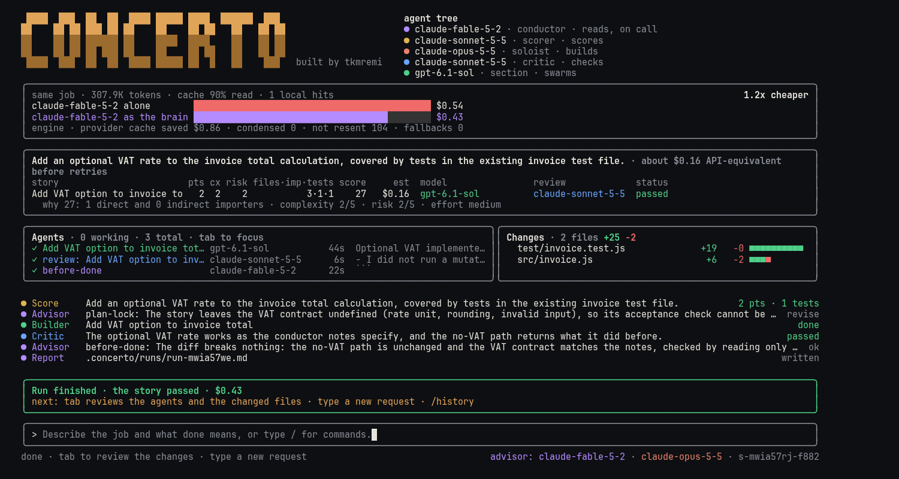
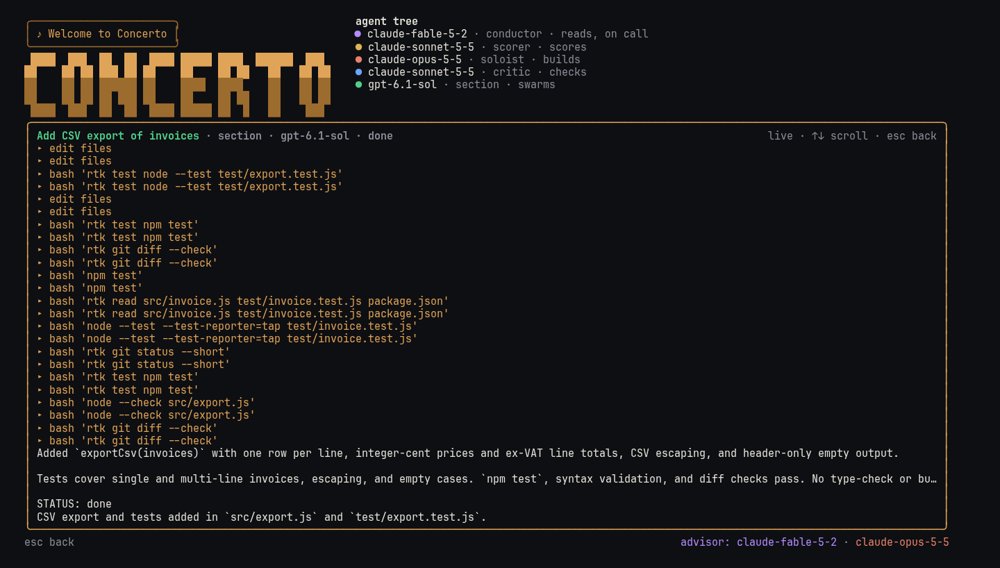
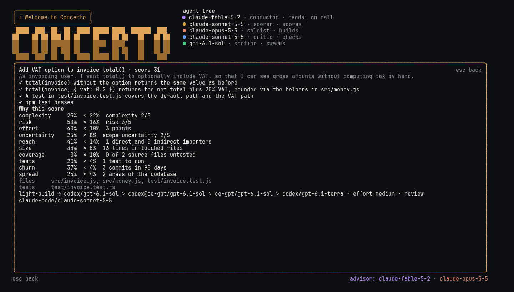
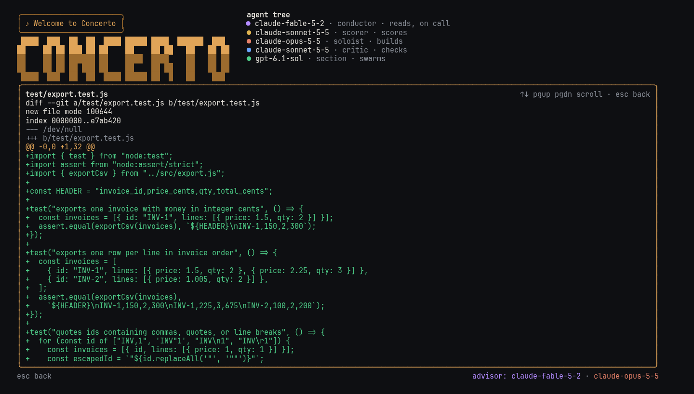
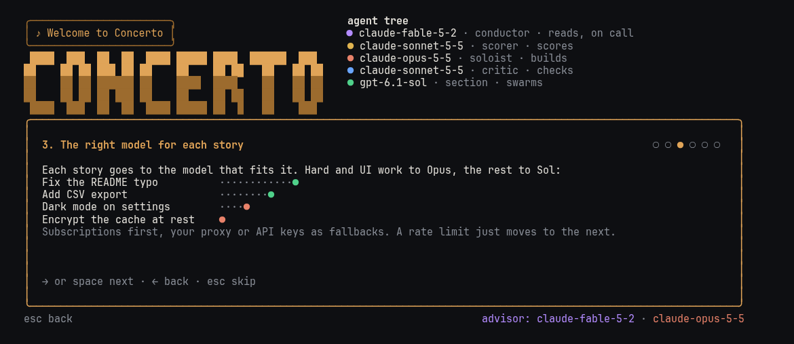

Concerto
A terminal orchestrator for coding agents. You give it one request. It splits the work into scored user stories and sends each story to the model that fits it.

What it looks like












/onboarding.How a story is scored
A scorer model reads your request and writes user stories. Each story gets Fibonacci points (1, 2, 3, 5, 8 or 13), complexity, risk, value and scope uncertainty on a 1 to 5 scale, tags, and the stories it depends on.
It also names the files each story will touch. Concerto checks them against the repository, matches misremembered paths to the real files, then measures the story's reach: those files, every file that imports them, and the tests that cover them, from SmartTest or from its own import graph.
The difficulty score from 0 to 100 is computed in code. No model is asked for it, so the same story always gets the same number.
from the model measured in the repo
complexity 22% reach (importers) 14%
risk 16% coverage gap 10%
effort 10% size of files 8%
uncertainty 8% tests to run 4%
churn, 90 days 4%
areas touched 4%
risk is at least 4/5 for auth, payments,
migrations and CI. No file named: the
model's four factors are reweighted.
| Story | Builder | Reviewer |
|---|---|---|
| Tagged UI or UX, any score | Claude Opus 5.5 | GPT-6 Astra |
| Score 55 or higher | Claude Opus 5.5 | Critic, Claude Sonnet 5.5 |
| Score 25 to 54 | GPT-6.1 Sol | Critic, Claude Sonnet 5.5 |
| Score under 25 | Claude Haiku 5.5 | Critic, Claude Sonnet 5.5 |
Stories that depend on nothing run in the same wave. Each route lists the same model through several backends: if one fails or hits a rate limit, the call moves to the next. A story that fails review twice wakes the conductor, and its guidance goes into one last attempt.
Three backends, no API keys
Concerto starts other programs and reads what they print. Your logins stay with those programs. Concerto never reads, stores or sends a key.
-
Claude Code CLI
Your Claude subscription
Builds UI/UX stories and stories scored 55 and up with Claude Opus 5.5, small stories (under 25) with Claude Haiku 5.5. Concerto starts it without your user settings, plugins or MCP servers, so a call opens with about 600 tokens of context instead of about 131,000.
-
Codex CLI
Your ChatGPT subscription
Builds stories scored 25 to 54 with GPT-6.1 Sol. GPT-6 Astra reviews UI/UX work. A Codex profile turns it into a proxy client:
codex@ce-gpt/gpt-6.1-solruns with-p ce-gpt. -
pi
Any API provider you log into
Anthropic, OpenAI, DeepSeek, Grok, or a proxy that serves all of them, such as
ce-gpt/orce-claude/. It is the fallback for both CLIs.--prefer 'ce-*'sends every model through the proxy first without changing which model runs.
The conductor wakes three times
Claude Fable 5.2 is the conductor. It can read the whole session and has no tool that writes. It stays asleep while the builders work and is called at three fixed moments, each with one question. When it asks for changes, its notes go into every builder's and critic's prompt for the rest of the run.
Before a plan locks
What did the plan miss?
When an error repeats twice
Is this the root cause, or a rabbit hole?
Before calling it done
Did the diff break anything?
The cost panel in the terminal shows what the same tokens would have cost on the conductor model alone, next to what the run cost with the conductor used only as the brain.
The token engine
rtk condenses what shell commands print inside an agent. Concerto works on the prompts themselves, and tells the agents to use rtk when it is installed.

Stable system prompt
One file per role, the same bytes on every call: the Pelloux guidelines, the role brief, then this repository's toolchain notes (package manager, SmartTest, rtk). The provider's prompt cache matches it each time.
Ordered segments and a repository snapshot
Every message is built most stable first: a map of the repository taken when the run starts, the plan, the conductor's notes, then the story and the feedback. Consecutive calls share the longest possible prefix, and agents spend fewer tool calls finding their way around.
Session dedupe
The conductor keeps one warm session per run and each story keeps its own. A resumed turn leaves out what the session already has and names it in one line.
Condenser
Critiques, logs and guidance lose ANSI codes, spinners, progress bars and repeated lines before they go back into a prompt. Code blocks pass through untouched.
Local response cache
Read-only calls such as scoring are keyed on model, role, system prompt, repository state and the normalized prompt. A hit costs no tokens, and identical calls in flight share one request. --stats prints the totals.
0.9 s to score the same request a second time, down from 21 s, with 0 tokens used
~600 tokens of context when Claude Code starts, instead of ~131K with your user settings loaded
Install and run
You need git, Node 22 or newer, and at least one of claude, codex or pi on your PATH and logged in.
curl -fsSL https://raw.githubusercontent.com/RemiPelloux/Concerto/main/scripts/install.sh | sh
cd ~/code/my-app
concerto "Move the API to Rust. Done means: every test passes."On Windows, in PowerShell: irm https://raw.githubusercontent.com/RemiPelloux/Concerto/main/scripts/install.ps1 | iex. Both installers fetch the latest release and need no admin rights.
On first launch Concerto looks for Claude Code, Codex and its profiles, pi and rtk, sends every model it can reach one tiny prompt, keeps only the ones that answer, asks which way calls go first, and writes ~/.config/concerto/config.json with all of them. Rerun it with --init.
Concerto's agents edit files in the directory you start it from. Run it in a git worktree or on a clean branch. After a run, .concerto/runs/ holds a report you can paste into a pull request. Every launch also gets a session id, shown in the status line and in any error, and a log at .concerto/logs/<id>.log with the models used, each agent's output and every error with its stack.
Need cheaper API access when your subscriptions run out? I use CodexEverywhere, an AI API gateway for GPT, Claude, DeepSeek and Grok behind one key. Name its providers ce-* and Concerto picks them up.
Flags
--plan- Print the scored stories, their models and a cost estimate as JSON. Nothing is built.
--budget 5- Stop starting stories once the run has spent $5, API-equivalent.
--init- Detect every linked AI again and rewrite your personal config.
--doctor- What is installed, linked, reachable or skipped, and what each role runs on.
--probe- Send every configured model one tiny prompt. Models that fail are skipped for a day.
--models- Show every reachable model and the chain each role and route gets.
--yes- Skip the confirm step and start building after scoring.
--orca- Start the run in a new Orca worktree, in its own terminal tab.
--run- Score and build without the TUI, printing the log. For scripts and CI.
--resume <id>- Reopen a saved session and build the stories that did not pass.
/historylists the ids. --prefer ce-*- Try these providers first for every model, for example your proxy.
--stats- Tokens, cache reads, savings and fallbacks for this repository.
In the terminal
Enter scores the request and shows the stories. Enter again runs the plan, Esc throws it away. While a run is going, Esc stops it.
Tab moves between the prompt, the agents, the stories and the changed files. Arrows pick one and Enter opens it: an agent's live output, why a story got its score, or a file's diff. While agents work, their clocks tick every second and a preview shows the last lines of one of them; a long silence usually means it is running tests. When a run ends, a box says how many stories passed and why the others did not, and Enter on the empty prompt builds those again. The prompt works in every phase: while a plan waits, type a change and Enter re-plans with it; while agents build, what you type becomes a note they all read from their next step; slash commands work throughout. Type / for commands such as /history, which reopens an earlier session, /setup, /config, /budget, /prefer and /onboarding, which replays the animated tour.
Change who does what
Routing lives in concerto.config.json at the root of the repository. routes picks the builder for a story and reviews picks who checks it. Each model is written as backend, slash, model id. A route lists models in order of preference and the first reachable one wins. A story with no review match goes to the critic role.
Run pnpm dev --models after an edit to see the result.
{
"routes": [
{ "name": "ux-build", "tags": ["ui", "ux", "frontend"],
"role": "soloist", "effort": "high",
"models": ["claude-code/claude-opus-5-5", "anthropic/claude-opus-5-5"] },
{ "name": "complex-build", "minScore": 55,
"role": "soloist", "effort": "high",
"models": ["claude-code/claude-opus-5-5", "anthropic/claude-opus-5-5"] },
{ "name": "small-build", "maxScore": 25,
"role": "section",
"models": ["claude-code/claude-haiku-5-5", "codex/gpt-6-luna"] },
{ "name": "light-build",
"role": "section", "effort": "medium",
"models": ["codex/gpt-6.1-sol", "openai/gpt-6.1-sol"] }
],
"reviews": [
{ "tags": ["ui", "ux", "frontend"],
"models": ["codex/gpt-6-astra", "openai/gpt-6-astra"] }
]
}Held to its own rules
Pelloux Guidelines
Files up to 400 lines, functions up to 25, at most three parameters, no debug output. A pre-commit hook audits the staged files and CI audits the whole tree. Builders get the same guidelines at the top of their prompt.
SmartTest
Runs only the tests a change can affect, so a one-file edit does not wait on the full suite. Install it from npm as @tkmremi/smarttest.